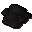
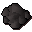

Swamp paste

| Config name | swamppaste |
| Item id | 1941 |
| Value | 30 gp |
| Weight | 18oz |
| Members | Yes |
| Tradeable | Yes |
| Stackable | Yes |
| Defined in | scripts/skill_cooking/configs/cooking_generic/cooking.obj |
Swamp paste
A tar like substance mixed with flour and warmed.
How to make
| Skill | Level | XP | Ingredients | Tool | How | Where | Makes |
|---|---|---|---|---|---|---|---|
| Cooking | 1 | 2.0 |  Raw swamp paste | use on object | fire | 1 can spoil into Swamp paste; fire only: You need to warm that over a fire. |
Sold at
| Shop | Shopkeeper | Stock |
|---|---|---|
| Khazard General Store | 500 |
Quests
Referenced in scripts
scripts/_test/scripts/cheats/cheat_trawler.rs2scripts/areas/area_ardougne_east/scripts/holgart_ardougne.rs2scripts/minigames/game_trawler/scripts/trawler_flood.rs2scripts/quests/quest_seaslug/scripts/seaslug_journal.rs2